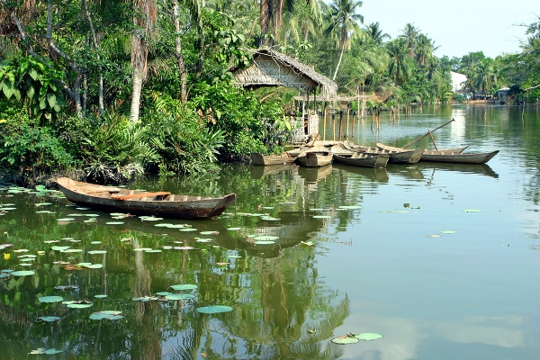
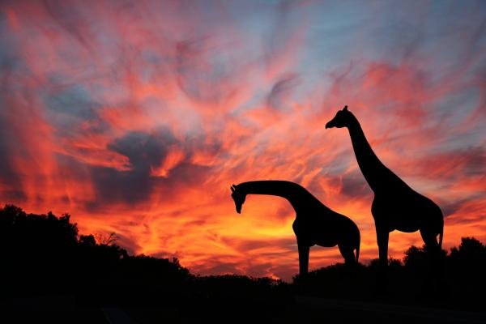
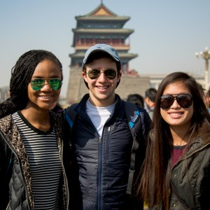
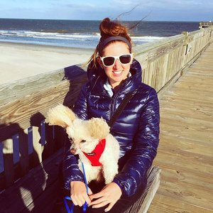

We have travelled and guided extensively on the routes in Africa. The team is made up of ex-Africa Overland tour guides and travellers from around the world, which allows for us to plan an entire Africa adventure. We save you time, money and we always have your best interest at heart.
The Big Apple, Finger Lakes, a Windy City, and some waterfalls that are so famous they don’t need a nickname. Welcome to the most jam-packed week-long road trip in America. Experience skyscrapers, music, and street life in two of the coolest cities in the US and breathe in the fresh air in upstate New York.
Travel to over 20 countries including France, Italy, Spain, Portugal, Germany, Switzerland, Austria and many more! Explore and experience new things whilst meeting people from all walks of life, from Lapland in the North, to Rome in the South, there are so many beautiful places to discover with us.
Encounter the colorful cultures of Indochina on an 18-day journey to Laos, Vietnam, Cambodia, and Thailand. Cruise Ha Long Bay, explore incredible Angkor Wat, interact with local families, and taste some of the world’s best street food at the night markets of Chiang Mai. Soak up the richness of this corner of the globe so steeped in tradition.
The backpacking trail through Southeast Asia is well worn. People have been traveling it since the 1970s. Starting in beautiful Thailand, the trail makes its way to up-and-coming Laos, through Vietnam, and through the temples of Angkor Wat. It then heads back into Thailand, where people head south to party in the Thai Islands before moving down to into Malaysia and Singapore. There are a few variations on the trail but this is what it mostly covers. The warm months of November-April draw the biggest crowds. Everyone is escaping the cold in Europe, and it’s not too hot in the region. Despite the vastness of the region, the tourist trail is much more uniform in many ways than Europe. Prices can be quite similar in places, transportation types don’t vary too much, and general travel advice is usually the same. Accommodation in Southeast Asia is really cheap. You can find dorm rooms for as little as 8,000-20,000 KHR or 16,000-40,500 LAK ($2-5 USD) in parts of Cambodia and Laos.
Despite having a coastline of beautiful beaches perfect for lazing, Kenya rarely inspires visitors to sit still – there are simply too many exciting things to experience. Stirring landscapes, ranging from equatorial glaciers and jagged peaks to wildlife-laden plains and tropical reefs, provide an epic natural playground for all who venture here, while the many intoxicating cultures surprise at each and every turn. Not only were safaris born in Kenya, but so was the very word itself – it means ‘journey’ in Swahili. Spotting the much-heralded Big Five (lion, leopard, buffalo, rhino and elephant) is a major aspiration of many visitors to Africa, and as one would suspect, Kenya provides some of the continent’s most impressive natural venues for it. None of which is more famous than the Masai Mara, where sightings of all these species is common. Lake Nakuru National Park, with its flamingo-lined lake and forest-clad escarpments, is another incredible place for Big Five safaris, as is Amboseli National Park, where Mt Kilimanjaro provides a staggering backdrop. Samburu Game Reserve in the remote north is prime safari territory too, and also hosts its own ‘Samburu Big Five’: Beisa onyx, Grevy’s zebra, long-necked gerenuk, reticulated giraffe and Somali ostrich.
Overall the last 40 days I've been on Forever young have been incredible! Not only do you learn so much about the culture in south east Asia, it also gives such an amazing opportunity to learn more about yourself. FY is also a really sweet way to meet new people, from tons of different backgrounds who some how mesh together and it forms a new family. I wouldn't change this experience for the world and I am so grateful for the friends and memories I gained along the way!
Great trip with plenty of days to see everything and still have lots of down time to relax. Dom and Shayla were organized, attentive, and always managed to find things for the group to do. Some long travel days but the private minibusses used were usually comfortable enough with stops to get out and stretch your legs.
